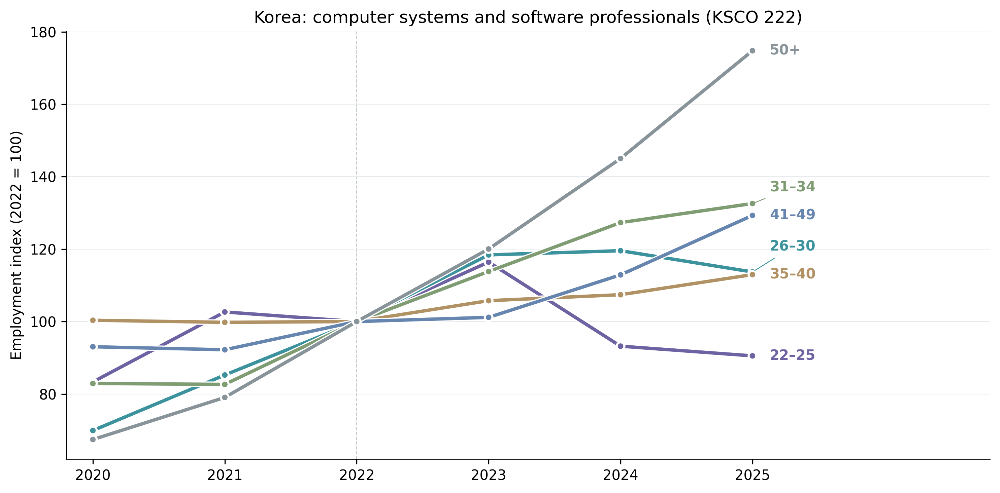
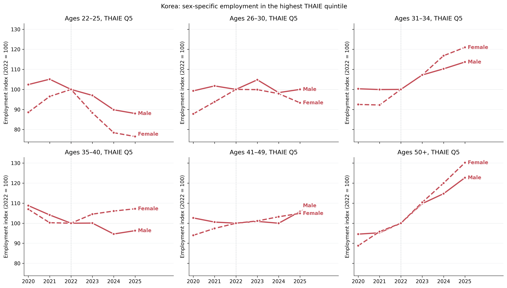

고용지수는 실제 2022년 11월 관측값을 100으로 두고 2022년 1월부터 표시합니다. 11월 관측값이 없는 반기·연간 조사 그래프는 미표시합니다.
KOREA · AI EXPOSURE AND EMPLOYMENT
AI 노출도가 높은 분야에서
어느 연령의 고용이 달라졌는가?
한국 공식 원자료로 연령·성별·직종별 월별 고용을 비교합니다. 실제 2022년 11월 관측값을 100으로 고정했습니다.
전체 15세 이상 Q5의 2025년 지수는 108.6, 22–25세 Q5는 79.7입니다. 다만 청년층은 다른 분위에서도 감소했습니다. 이 차이를 AI의 인과효과로 해석하지 않습니다.
Introduction
생성형 AI의 확산 이후 고용 변화가 높은 노출도의 직업에 집중되는지, 같은 분야에서도 초기 경력 연령과 중·장년 연령의 추세가 다른지 살펴봅니다. 고용지수는 집단의 크기 변화를 측정합니다. 고용률, 신규 채용, 해고 또는 동일인의 직업 이동과는 다릅니다.
한국 공식 원자료를 집계하고 자체 THAIE를 연결해 분석합니다.
Methods
| 자료 | 관측 | 분류 | 이 페이지의 용도 |
|---|---|---|---|
| 지역별고용조사 B형 | 2020–2025년 4월·10월, 12회 | 직업·산업 소분류, 만연령, 성별 | THAIE 분위, 특정 직업, 산업 비교 |
| 경제활동인구조사 연간자료2 | 2020–2025년 매월, 72개월 | 직업·산업 대분류, 만연령, 성별 | 월별 연령·성별 고용의 보조 비교 |
| 고용행정통계 | 2020.01–2026.10, 82개월 | 소프트웨어 개발자, 원자료 연령 구간, 성별 | 고용보험 피보험자 월별 경로. 전체 취업자와 구분 |
고용행정통계의 월별 분위 비교는 공식 분류 연결이 단일한 직종에 한해 별도로 제공합니다. 직종별로 모호한 분위 연결은 제외하고, 각 연령에서 남녀의 포함 직종과 관측기간을 고정했습니다. 조사자료 기반 원고의 분석과는 모집단·분류가 다릅니다.
- 유효한 취업 상태와 양의 가중치를 가진 15세 이상 표본을 집계합니다. 월별 경활 가중값은 MDIS 공식 집계 안내에 따라 1,000으로 나눕니다. 표본 행이 동일하다는 이유로 중복 제거하지 않습니다.
- 22–25, 26–30, 31–34, 35–40, 41–49, 50세 이상을 중복 없이 구분합니다. ‘전체’는 15세 이상으로, 여섯 연령 구간에서 빠진 15–21세도 포함합니다.
- 검증된 한국 직업 소분류 연결과 기존 GPT-5 2025 THAIE를 사용합니다. 2019–2021년 전국 취업자 가중치로 정한 Q1–Q5를 모든 시점·연령·성별·산업에서 고정합니다. 각 하위집단에서 분위 경계를 다시 계산하지 않습니다.
- 연도별 지역고용 값은 4월·10월의 동등 가중 평균이며 12개월 평균이 아닙니다. 월별 경활의 연도별 값은 12개월 평균입니다. 두 조사를 한 계열로 이어 붙이지 않습니다.
- 주요 산업은 2022년 취업자가 15만 명 이상인 산업 중 고용 가중 THAIE가 높은 여섯 산업과, 사전에 관심을 둔 컴퓨터 프로그래밍·시스템 통합업입니다. 결과 변화로 산업을 선정하지 않습니다.
- 대표 직업은 222 직업군과, 2022년 취업자 10만 명 이상인 직업 중 THAIE가 높은 직업입니다. 연령·성별은 자료의 성별 코드에 따른 분류이며 성 정체성 측정은 아닙니다.
- 지역고용 각 조사시점과 2022년 기준 두 조사시점 모두 비가중 표본 30개 이상인 계열만 표시합니다. 미달 셀은 결측으로 남깁니다. 이 기준은 공식 공표 기준이나 정밀도 보증을 뜻하지 않습니다.
각 선은 자기 집단의 2022년 11월 값을 기준으로 합니다. 지수로 집단 간 고용 규모를 비교할 수 없으며 계절조정 전 자료입니다.
직업 소분류 수준의 THAIE는 시간에 고정된 값입니다. 따라서 동일 직업을 고정하면 Q1–Q5의 독립적인 변동은 없습니다. 직업 고정 패널에서는 그 직업의 점수·분위를 함께 제시하고 연령 또는 성별 추세를 비교합니다. 회귀분석의 직업 고정효과 추정과는 다릅니다.
THAIE의 의미와 해석 범위
과업별 기존 평가 점수에 인간 예상 수행시간에 대응하는 모델의 완료 계수를 곱하고, 기존의 검증된 절차로 직업까지 집계한 지표입니다. 모델 기준은 시계열 전체에서 고정했습니다. 모델별 기술 발전을 매년 갱신한 점수가 아니며 실제 AI 도입 여부를 관측한 값도 아닙니다. 완료 계수는 실제 직장 과업의 성공확률로 검증된 값이 아닙니다. 수식과 검증
직종·연령·성별의 실제 2022년 11월 고용이 양수로 관측된 계열만 표시합니다. 누락값은 보간하거나 0으로 채우지 않습니다.
Results
전체에서 연령, 성별, 구체적인 직업·산업 사례로 좁혀 봅니다. 모든 계열의 선 굵기는 같고 Q5는 적색으로 강조하지만, 다른 분위의 경로와 결측도 함께 남깁니다.
아래는 실제 월별 관측입니다. 고용보험 피보험자와 전체 취업자는 모집단이 다르며, 기존 THAIE 분위 비교는 4월·10월 조사값으로 별도 유지합니다.
월별 01 · 다른 직종의 전체 경로는 어떠한가?
소프트웨어 개발자 외 직종도 같은 2022년 기준으로 비교합니다. 선택한 직종의 전체 연령·성별 월말 피보험자 수입니다. THAIE 분위별 집계는 아닙니다.
수치 보기
월별 02 · 같은 직종에서 연령별 경로는 어떠한가?
원자료의 5세 연령 구간을 유지했습니다. 다른 직종은 2024년 11월까지, 소프트웨어 개발자는 2026년 10월까지 교차자료를 확인했습니다. 최신 미확보 월은 그리지 않습니다.
수치 보기
월별 03 · 직종과 연령을 고정하면 남녀의 경로는 어떠한가?
여성과 남성은 각각 자기 집단의 2022년 11월을 100으로 두었습니다. 인구와 세부 업무 구성을 통제한 성별 효과는 아닙니다.
수치 보기
월별 04 · 전국 전체 취업자의 연령별 경로는 어떠한가?
경제활동인구조사 72개월의 별도 결과입니다. THAIE로 구분하지 않은 전체 고용이며 소프트웨어 개발자 고용을 뜻하지 않습니다.
그래프 수치 보기
월별 05 · THAIE Q1–Q5에서 남녀 고용 경로는 어떻게 다른가?
각 분위의 패널 안에서 남성과 여성을 비교합니다. 실제 관측된 2022년 1월–2024년 11월을 표시하며, 남녀 각각 자기 집단의 2022년 11월을 100으로 두었습니다. 원자료의 5세 연령 구간을 선택합니다.
2025년 이후 전체 직종의 연령·성별 교차표는 아직 공통으로 확보되지 않아 이 비교에는 포함하지 않았습니다. 소프트웨어 개발자 한 직종의 최신 자료를 Q5 전체로 대신하지 않았습니다.
Q1 · 가장 낮음
수치 보기
Q2
수치 보기
Q3
수치 보기
Q4
수치 보기
Q5 · 가장 높음
수치 보기
전체 연결 직종
수치 보기
남성은 적색, 여성은 청회색입니다. 선의 굵기는 같고 마커는 없습니다. 회색 음영은 두 지수 사이의 간격이며 신뢰구간이 아닙니다. 모든 패널은 선택한 연령 내에서 같은 세로축을 사용합니다. 전체 연결 직종은 포함된 Q1–Q5의 합계이며 전국 전체 고용을 뜻하지 않습니다.
분위 연결과 포함 범위
분위는 기존 2019–2021년 전국 고용 가중 THAIE 분류를 그대로 사용합니다. 연령·성별 안에서 다시 순위를 매기지 않습니다. 고용행정통계의 KECO2025 직종명을 공식 분류명과 일치시키고, 공식 KSCO8 연계표의 모든 하위 직업이 같은 분위에 속할 때만 포함했습니다. 여러 분위로 나뉘거나 점수가 없는 직종은 제외했으며 임의 배분 가중치를 사용하지 않았습니다.
140개 명명 직종 중 110개에서 분위가 단일하게 연결됐습니다. 연령별 그래프에는 남녀 모두 35개월 전체가 관측되고 2022년 11월 고용이 양수인 동일 직종 집합만 포함합니다. 이 조건은 표시 기간 전체의 자료 완전성으로 정한 선택 표본이며, 전국의 모든 직종이나 인과효과를 대표하지 않습니다. 결측은 0으로 채우거나 보간하지 않습니다.
2025년 고정 역량 벤치마크를 과거 고용에 적용한 기술통계입니다. 피보험자 수는 전체 취업자 수·고용률과 다르며, 같은 분위 내에서도 남녀의 세부 직종 구성과 인구가 다를 수 있습니다.
한국고용직업분류 2025 공식 해설서와 연계표기존 THAIE 분위 비교와 소프트웨어 사례
01 전체 고용이 늘어도, 모든 연령이 함께 늘어나는가?
전체 15세 이상에서 Q5의 2025년 4월·10월 평균 고용지수는 108.6입니다. 고노출 직업 전체의 고용 감소를 보여주는 결과는 아닙니다. 다음 단계에서 연령을 나누어 봅니다.
지역별고용조사 · 2020–2025 · 각 집단의 2022년 평균 = 100
수치 보기
02 연령을 고정하면 Q1–Q5의 경로가 달라지는가?
전체 산업·전체 성별의 22–25세를 예로 보면, 2025년 4월·10월 평균 지수는 Q1 90.1, Q2 73.0, Q3 88.4, Q4 84.3, Q5 79.7입니다. 모든 분위에서 2022년보다 감소했지만, Q5가 가장 큰 감소를 보인 것은 아닙니다. 노출도에 따른 단조로운 순서는 관측되지 않습니다.
산업을 선택해도 전국 기준 분위 경계를 유지합니다. 전체 산업은 점수가 연결된 직업의 고용입니다.
그래프 수치 보기
연평균 보조 그림 보기 · 실제 조사연월 그래프는 위에 표시

03 같은 연령에서도 남녀의 경로는 같은가?
22–25세 Q5의 2025년 지수는 여성 76.5, 남성 88.0입니다. 각각 자기 집단의 2022년 평균과 비교한 값이며, 인구·직업 구성 차이를 통제한 성별 효과는 아닙니다.
그림 파일 · 전체 산업 · 4월/10월 관측 · 현재 연령 PNG · 현재 연령 PDF · 모든 연령 PDF

Q1 · 가장 낮음
수치 보기
Q2
수치 보기
Q3
수치 보기
Q4
수치 보기
Q5 · 가장 높음
수치 보기
전체 점수 연결 직업
수치 보기
각 패널 안에서 남녀를 비교하며, 여섯 패널은 같은 세로축을 사용합니다. 전체 패널은 THAIE 점수가 연결된 직업만 포함합니다. 회색 음영은 두 지수의 차이이며 신뢰구간이 아닙니다. 각 선은 자기 집단의 2022년 평균을 100으로 사용합니다.
04 소프트웨어 개발자의 월별 경로를 더 가까이 보면
2022년 11월=100 기준으로 소프트웨어 개발자 20–24세의 2026년 10월 지수는 42.9입니다. 25–29세는 79.3, 30–34세는 130.8입니다. 원자료의 연령 구간과 고용보험 피보험자 모집단을 기준으로 비교합니다.
고용행정통계 · 2020.01–2026.10 · 월말 피보험자 수 · 원자료 연령 구간 · 계절조정 전
수치 보기
전체 취업자 수와 다른 고용보험 피보험자 기준입니다. 월별 값은 보간하지 않았습니다. 연도별 보기에는 12개월이 모두 있는 완료연도만 포함합니다. 직종과 산업은 서로 다른 단위입니다.
05 소프트웨어 개발자의 연령·성별 월별 고용
소프트웨어 개발자 직종의 실제 월별 피보험자 수를 비교합니다. 연령 범위와 성별을 선택할 수 있으며, 각 계열의 2022년 11월을 100으로 두었습니다.
고용행정통계 · 2022.01–2026.10 · 소프트웨어 개발자 직종 · 월말 피보험자 수 · 계절조정 전
수치 보기
전체 취업자가 아닌 고용보험 피보험자 기준입니다. 실제 관측월만 사용하며 누락값은 보간하거나 0으로 채우지 않습니다.
추가 비교와 기존 조사 결과
1. 컴퓨터 시스템 및 소프트웨어 전문가의 연령별 고용
KSCO 222. 순수한 소프트웨어 개발자만을 분리한 결과가 아닙니다. 조사시점별 원자료를 연도별로 평균했습니다.

| 연령 | 2025년 지수 | 2022년 대비 |
|---|---|---|
| 22–25 | 90.5 | -9.5% |
| 26–30 | 113.7 | +13.7% |
| 31–34 | 132.6 | +32.6% |
| 35–40 | 113.0 | +13.0% |
| 41–49 | 129.3 | +29.3% |
| 50+ | 174.8 | +74.8% |
3. 직업을 고정한 연령별·성별 고용
그래프 수치 보기
4. 연령을 고정한 성별·THAIE 분위별 고용
같은 연령·분위·산업 안에서도 남녀의 세부 직업 구성이 다를 수 있습니다. 성별 효과를 인과적으로 식별하는 비교가 아닙니다.
그래프 수치 보기

5. 대표 산업을 고정한 연령별 고용
그래프 수치 보기
Discussion
1. 전체 고용의 증가와 청년층 감소가 동시에 나타납니다
2022년 11월을 100으로 두면, 2026년 10월 소프트웨어 개발자 전체 피보험자 지수는 106.4입니다. 같은 기간 20–24세는 42.9, 25–29세는 79.3으로 하락했습니다. 직종 전체의 성장만으로 초기 경력층의 고용 상황을 판단하기 어렵습니다. 정책적으로는 전체 일자리 수와 함께 청년층의 진입 기회를 별도로 살펴볼 필요가 있습니다. 다만 피보험자 수의 감소가 곧 신규 채용 감소나 AI 대체를 뜻하지는 않습니다.
2. 같은 직종에서도 연령별 경로가 갈립니다
30–34세의 지수는 130.8로 상승한 반면, 40–44세는 100.5, 45–49세는 110.5입니다. 감소가 모든 연령에서 공통으로 나타나는 흐름은 아닙니다. 이러한 차이는 경력별 노동 수요의 변화를 검토할 근거가 되지만, 연령집단의 인구 변화와 집단 간 이동도 반영합니다. 동일인을 추적한 결과가 아니므로 청년층의 일자리가 다른 연령층으로 이전됐다고 단정할 수 없습니다.
3. 성별 차이는 연령과 함께 해석해야 합니다
20–24세 지수는 여성 41.2, 남성 44.7로 모두 하락했습니다. 25–29세에서는 여성 84.8, 남성 76.1이며, 30–34세에서는 여성 141.0, 남성 126.8입니다. 여성이나 남성 한쪽이 일관되게 더 큰 감소를 겪었다는 해석은 지지되지 않습니다. 성별 비교는 연령을 고정해 수행하고, 기준시점의 집단 규모와 세부 업무 구성을 함께 확인해야 합니다.
위 1–3번은 실제 월별 피보험자 수에 대한 기술통계입니다. 통계적 검정은 아래 4번에서 별도로 제시합니다. 직종별·연령별 차이를 곧바로 AI의 인과효과로 해석하지 않습니다.
4. 연령별 상대적 위축은 유의하지만, AI의 인과효과는 확인되지 않습니다
소프트웨어 개발자의 20–29세/40세 이상 피보험자 수 비율에 대해 2022년 11월 전후의 변화를 검정했습니다. 사전 추세와 월별 계절성을 반영한 중단시계열 분석에서, 사후 24개월 시점의 고용비는 사전 추세를 연장한 경로보다 33.9% 낮았습니다. 95% 신뢰구간은 −38.8%에서 −28.6%이며 양측 p<0.001입니다. 이 값은 청년 고용 자체의 감소율이나 AI의 처리효과를 뜻하지 않습니다.
주 분석은 사전 2020년 1월–2022년 10월과 사후 2022년 12월–2025년 9월을 각각 34개월로 맞췄습니다. 2019년 11·12월이 없어 사전 36개월은 확보하지 못했습니다. 전환월 2022년 11월은 별도 펄스로 흡수해 총 69개 월 관측을 사용했습니다. 전후 24개월 창에서는 −26.3%, 코로나 연도 조정 명세에서는 −29.9%였으며 모두 p<0.001입니다. 자기상관 보정 시차를 6·12·18개월로 바꿔도 감소 방향과 유의성이 유지됐습니다.
다만 사전 선형 추세부터 두 연령집단 간 차이가 유의합니다(p<0.001). 40세 이상을 AI의 영향을 받지 않은 대조집단으로 볼 수도 없습니다. 따라서 이 검정은 연령별 상대 고용 경로의 변화에 대한 증거이며, AI가 그 차이를 유발했다는 인과 검정의 통과를 의미하지 않습니다.
AI 관련 차이를 별도로 평가하기 위해 지역별고용조사의 THAIE Q5와 Q1–Q4에서 청년 15–29세/40세 이상 고용비를 비교했습니다. 전후 3개 연도 창의 인구 조정 DID에서는 Q5의 추가 감소가 −10.3%(p=0.018)였지만, 2013–2025년 장기 추세와 코로나를 반영하면 +3.2%(p=0.734)로 유의하지 않았습니다. 산업별 충격까지 반영한 명세 역시 +5.9%(p=0.322)였습니다. 직업 단위 사전계수 공동검정도 p=0.037로 평행추세에 문제가 있었습니다. 현재 자료로는 강건한 AI 고유의 인과효과를 확인하지 못했습니다.
| 검정 | 추정 차이 | 95% 신뢰구간 | p값 | 표본 |
|---|---|---|---|---|
| 월별 소프트웨어 개발자 고용비 · 추세 조정 · 24개월 후 | -33.9% | -38.8% ~ -28.6% | <0.001 | 69개월 |
| THAIE Q5 · 전후 3년 DID | -10.3% | -18.0% ~ -1.8% | 0.018 | 155개 직업 · 1,818개 연령셀 |
| THAIE Q5 · 장기 추세·코로나 조정 | +3.2% | -14.2% ~ 24.1% | 0.734 | 156개 직업 · 3,952개 연령셀 |
| THAIE Q5 · 산업별 충격·장기 추세·코로나 조정 | +5.9% | -5.5% ~ 18.8% | 0.322 | 155개 직업 · 43,202개 연령셀 |
월별 검정은 Newey–West HAC 12개월 시차 보정, 연간 검정은 직업 단위 군집 표준오차를 사용했습니다. 월별의 20–29세와 연간의 15–29세는 정의와 모집단이 다릅니다. 연령셀 관측치는 사람 수가 아닙니다. 모든 수치는 표시용 고용지수 대신 원래 집계 건수에서 추정했습니다. 사례·연령 선택 이후 수행한 탐색적 분석이며, 표에는 원 p값을 표시했습니다. 전체·남성·여성의 세 주 월별 검정은 Holm 보정 후에도 유의했습니다. 자세한 명세, 누락 처리, 민감도 결과는 아래에 공개합니다.
사전 추세 검정의 해석 근거는 Roth (2022)를 참고했습니다. 사전 검정이 비유의하더라도 평행추세가 입증되는 것은 아닙니다.
자료와 코드
원자료는 재배포하지 않습니다. 공개 가능한 집계 결과와 재현 코드만 제공합니다. 지역별고용조사의 작은 셀은 결측 처리했습니다. 고용행정통계는 공식 집계치이며 조사자료와 모집단이 다릅니다.
공식 자료는 MDIS에서 제공합니다. 월별 원자료의 DOI는 10.23333/PN.50149167.V3.9입니다. 지역고용 원자료의 연도·항목과 해시는 로컬 분석 기록에 보관했습니다. 기존 한국 페이지는 백업 후 이 페이지로 연결했습니다.